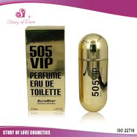

PERFUMES
history of perfumes
Ancient perfume varied in many respects from modern fragrances. In ancient Egypt, frankincense, opopanax, and myrhh were used. Throughout ancient Africa, various scented oils were used as sun protection as well as for their smell. In Mesopotamia and Babylonia, favored scents included cedar, myrrh, frankincense, and cypress. Generally, oils were used as the "carriers" or fluids to take on the strong scents. In modern times, alcohol is usually used as a carrier. Most of the substances that were the source of scents were plant-based, ranging from flowers to resins and woods.
